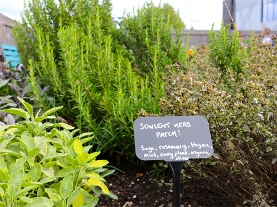

| Societies at Solent A society is a group of students with a common interest! There couldn't be a better or easier way to make new friends with similar interests, or get involved in something completely new. Our societies represent a wide range of interests, from creative skills to political, from religion to activism, to the whacky and wonderful, and everything in between. There's likely to be something you like the look of. Check out our list of active societies below, find out more information and how to contact them by clicking through each one.Still unsure about joining a society? Take a look at our 10 REASONS TO JOIN A SOCIETY booklet to read all about the benefits!If you have any questions about society memberships, fees, or contacting the societies or anything else, please email student.involvement@solent.ac.uk. | |
| Solent Sport Want to join a club or team? Learn more about performance sport and scholarships? Interesting in joining the university gym? This is where you will find all things relating to sport at Solent! | |
| About Solent food garden Solent Food Garden is part of the Students’ Union initiative, in partnership with Solent University, to green up the university campus.Our food garden aims to create a safe space for people to hang out, garden and grow. It is very common for university students to lack an outdoor space that they can make their own and relax in, and we hope that the food garden provides this for our members!Our food garden is available to all students! However, only applicants can make changes and grow fruit, vegetables and herbs in the beds. In the food garden, there are 10 raised beds (two extra-high for those with back problems or for wheelchair access) and ground growing spaces. The area is locked to ensure that the space stays student and Solent staff-led. Members of the food garden will have the access code. |  |
| Get involved and make a difference! Volunteering is an excellent way to help you get involved with important causes, whether they're local to you or further afield on a national scale. Volunteering is as good for you as it is for the people that you help. You'll develop skills, gain confidence and have so me amazing experiences. There's a whole range of causes to help too, so whether you're passionate about the environment or helping people in real time, you'll be able to make a difference. How can I get involved? There's loads of local charities, events and causes that could benefit from some extra support around Southampton! Explore the latest volunteering opportunities, both locally and online. We'll update these opportunities regularly, so keep checking back to view the newest! |